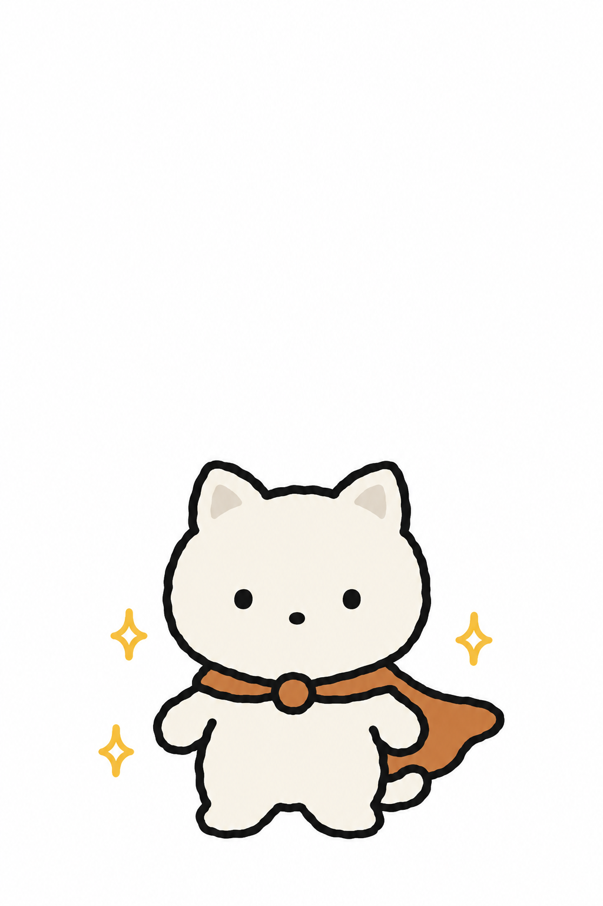
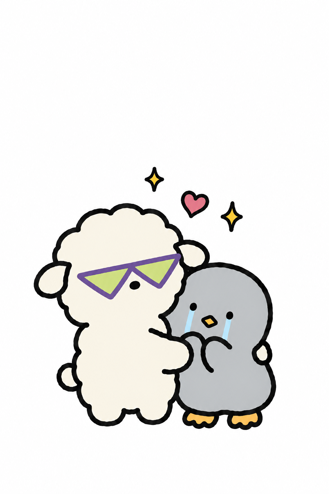
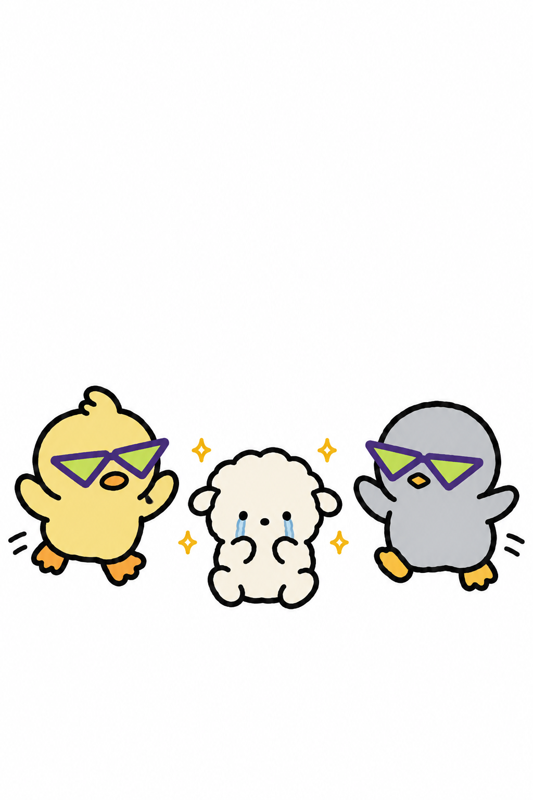

당신은 약간 초능력자?
말하지 않은 마음까지 읽는
초능력자

나는 사람들이 말하지 않아도
그들의 마음을 읽을 수 있다.
배고파
집 가고 싶다
괜찮은 척 하는 중
쟤 왜 저래
월요일 싫어
그냥 좀 쉬고 싶다

이 능력 덕분에
많은 이들로부터 환영을 받기도 하고
내 맘 알아 주는 건
너밖에 없어

때로는 주류 무리의 반대를 무릅쓰고
소외되는 이에게 손 내미는 영웅적 면모도 보여 준다.

이 능력 때문에 필요 없는 눈치를 보거나
손해를 자처할 때도 많고
마감 시간
1시간 넘게 남음
아무 생각 없음

스스로의 마음을 돌보지 못하는 나를 미워하거나
지난 날의 영웅적인 선택들까지 후회하기도 한다.
이건 초능력이 아니라 저주야...

그렇지만 내가 나를 챙기지 못할 때면,
항상 내가 지켜낸 사람들이 나를 지켜 줬다.

나는 앞으로도 사람들의 마음을 외면하지 않을 것이다.
내가 건넨 손길들로 내 주변을 따뜻하게 할 수만 있다면.
당신 옆의 초능력자를 태그해 주세요